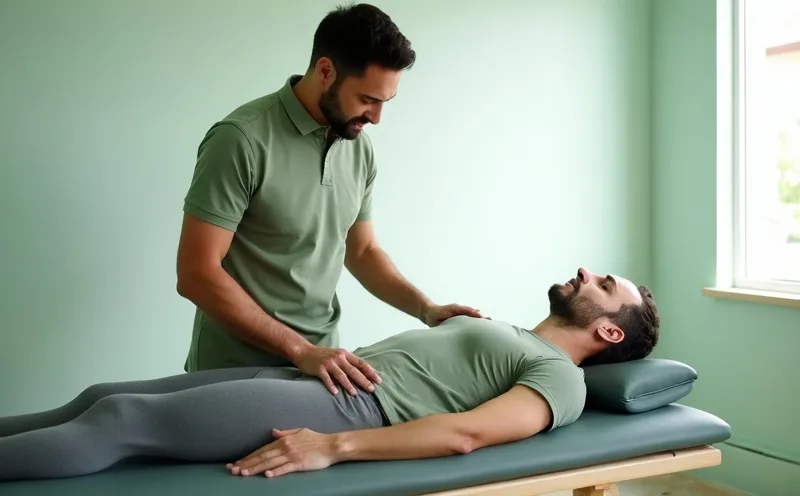

Back and sciatic pain
Lower-back pain, disc-related symptoms and nerve pain down the leg. Assessed for mechanical cause before anything is adjusted.
Book for thisRegistered chiropractors · Open six days
Most people reach us after the stretches, the painkillers and the wait-and-see. We start with a proper examination, tell you what is actually driving it, and put the plan in writing.

48hr
typical wait for a first appointment
90min
examination before any treatment
6 days
a week, from 7am to 8pm
3
clinics, one shared set of records
Why it keeps returning
Pain that comes back is usually pain that was managed rather than diagnosed. The ache quietens, the cause does not move, and a few months later you are back where you started on a slightly worse baseline.
What we treat
Whatever brings you through the door, the first appointment is the same ninety-minute examination. Only what follows it differs.
Lower-back pain, disc-related symptoms and nerve pain down the leg. Assessed for mechanical cause before anything is adjusted.
Book for thisTension headaches, restricted rotation and jaw pain that trace back to the upper cervical spine and a working posture.
Book for thisStructural assessment for postural collapse and scoliosis, with an honest account of what care can change and what it cannot.
Book for thisFor runners, lifters and court athletes: range restored, tolerance rebuilt, and the recurring injury pattern actually interrupted.
Book for thisYour first visit
Nothing is adjusted until we have examined you properly, explained what we found and agreed what to do about it.
1
Twenty minutes on what started it, what you have already tried, and what you actually need to get back to.
2
Full orthopaedic and neurological testing, plus movement and load work. Imaging only where it would change the plan.
3
Shown to you on a model, in plain language, including the parts we are uncertain about and why.
4
What we propose, roughly how many visits, what you do between them, and what would make us stop.



Who you will see
Clinical lead across the three clinics. Maya took the practice over in 2019 and rewrote the first appointment from the ground up — the old one ran thirty minutes and finished with an adjustment; the new one runs ninety and finishes with a plan.
“If we cannot tell you what is causing it, we have not finished examining you.”
Fees
No packages to buy up front, and no discount for committing to a block of visits you may not need.
£95
single appointment · 90 minutes
£52
per treatment · 30 minutes
£120
single appointment · 2 hours
Patients
“Two years, four practitioners, and nobody had watched me walk. That happened in the first ten minutes here.”
“I booked it at midnight from the sofa, which is the only reason I booked it at all. Seen on the Thursday.”
“They told me two of the sessions I had booked were unnecessary and refunded them. That is why I still go back.”
Book online
Before you book
No. Chiropractic is a primary-contact profession, so you can book directly. If your symptoms need a GP or a specialist instead of us, we will say so at the assessment and write to them with your consent.
Only where the examination supports it and you are happy to go ahead. The appointment runs ninety minutes precisely so neither the examination nor the explanation gets squeezed. Some people leave with a plan and no treatment.
You get an estimate in writing after the assessment, because it depends entirely on what we find. We review it as we go, and we finish care when you no longer need it rather than when a package runs out.
Usually not, though short-lived soreness afterwards is common, much like after unfamiliar exercise. We explain what to expect before anything happens, and nothing proceeds without your agreement.
Many policies cover chiropractic care, though cover varies by insurer and plan. We issue an itemised receipt for every appointment. Check with your provider before booking so you know where you stand.
Ninety minutes, a real examination, and a straight answer about whether we can help.